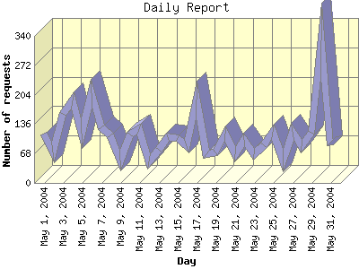

Report generated by Analog 5.91beta1 and Report Magic 2.21
|
Web Server Statistics for "Harish Narayanan (hnarayan) - May 2004" Report generated by Analog 5.91beta1 and Report Magic 2.21 |
The Daily Report identifies the activity for each day within the reporting period. Remember that one page hit can result in several server requests as the images for each page are loaded.

| Day | Number of requests | Number of bytes transferred | Percentage of the bytes | Percentage of the requests | |
|---|---|---|---|---|---|
| 1. | May 1, 2004 | 115 | 3.512 MB | 4.28% | 3.31% |
| 2. | May 2, 2004 | 70 | 1.843 MB | 2.24% | 2.01% |
| 3. | May 3, 2004 | 159 | 2.436 MB | 2.97% | 4.57% |
| 4. | May 4, 2004 | 190 | 5.587 MB | 6.80% | 5.47% |
| 5. | May 5, 2004 | 115 | 3.557 MB | 4.33% | 3.31% |
| 6. | May 6, 2004 | 207 | 7.201 MB | 8.77% | 5.96% |
| 7. | May 7, 2004 | 129 | 1.772 MB | 2.16% | 3.71% |
| 8. | May 8, 2004 | 110 | 1.759 MB | 2.14% | 3.17% |
| 9. | May 9, 2004 | 51 | 3.299 MB | 4.02% | 1.47% |
| 10. | May 10, 2004 | 111 | 2.687 MB | 3.27% | 3.19% |
| 11. | May 11, 2004 | 125 | 2.304 MB | 2.81% | 3.60% |
| 12. | May 12, 2004 | 50 | 1,016.205 KB | 1.21% | 1.44% |
| 13. | May 13, 2004 | 77 | 524.676 KB | 0.62% | 2.21% |
| 14. | May 14, 2004 | 106 | 1.277 MB | 1.55% | 3.05% |
| 15. | May 15, 2004 | 104 | 3.048 MB | 3.71% | 2.99% |
| 16. | May 16, 2004 | 85 | 2.130 MB | 2.59% | 2.44% |
| 17. | May 17, 2004 | 193 | 5.049 MB | 6.15% | 5.55% |
| 18. | May 18, 2004 | 67 | 944.218 KB | 1.12% | 1.93% |
| 19. | May 19, 2004 | 70 | 1.657 MB | 2.02% | 2.01% |
| 20. | May 20, 2004 | 113 | 4.110 MB | 5.00% | 3.25% |
| 21. | May 21, 2004 | 67 | 1.333 MB | 1.62% | 1.93% |
| 22. | May 22, 2004 | 99 | 4.416 MB | 5.38% | 2.85% |
| 23. | May 23, 2004 | 66 | 3.526 MB | 4.29% | 1.90% |
| 24. | May 24, 2004 | 87 | 1.123 MB | 1.37% | 2.50% |
| 25. | May 25, 2004 | 118 | 2.717 MB | 3.31% | 3.40% |
| 26. | May 26, 2004 | 52 | 1.203 MB | 1.47% | 1.50% |
| 27. | May 27, 2004 | 119 | 1.676 MB | 2.04% | 3.42% |
| 28. | May 28, 2004 | 86 | 2.684 MB | 3.27% | 2.47% |
| 29. | May 29, 2004 | 117 | 4.509 MB | 5.49% | 3.37% |
| 30. | May 30, 2004 | 330 | 2.230 MB | 2.71% | 9.49% |
| 31. | May 31, 2004 | 88 | 1.069 MB | 1.30% | 2.53% |
Most active day May 30, 2004 : 191 pages sent. 330 requests handled. 2,338,766.00 served.
Daily average: 112 requests handled. 2.650 MB served.
This report was generated on August 5, 2004 15:50.
Report time frame May 1, 2004 00:57 to May 31, 2004 23:07.
| Web statistics report produced by: | |
 Analog 5.91beta1 Analog 5.91beta1 |  Report Magic 2.21 Report Magic 2.21 |